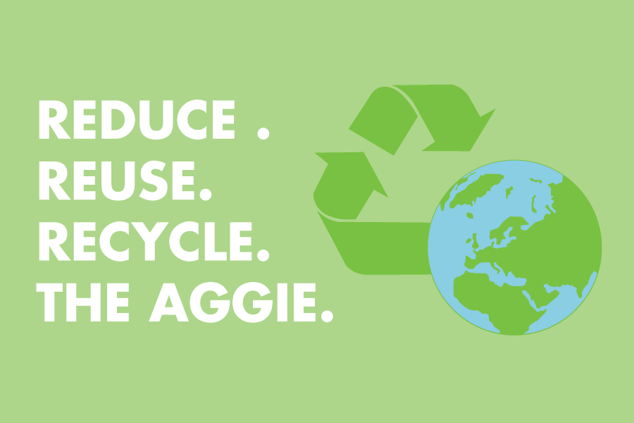
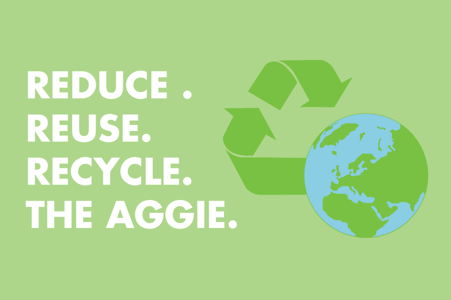

Visual Design
The California Aggie
The California Aggie is the UC Davis student run newspaper. I participated in the "Print the Aggie" campaign by brainstorming marketing strategies on increasing the presence of the newspaper on campus and within the Davis community. The campaign needed support from at least 20% of the entire student body population in order to pass. In the winter of 2017, it was successfully brought back into print publication for the first time in three years.
From November 2016 until September 2017, I was a graphic designer that made graphics to go along with news articles. Starting in September 2017, I switched to being a layout artist that formatted and designed the layout of the newspaper. I collaborated with the design directors to set style guidelines and to establish a brand identity for the newspaper.

My Role
- Layout Artist
- Graphic Designer
Timeline
- November 2016 - March 2018
Tools
- InDesign
- Illustrator
- Photoshop
Projects
Layouts
The sections I worked on were Arts and Culture, City News, and Opinions.


Graphics
 
